Outils et méthodes pour la médecine factuelle
Oniris VetAgroBio
A propos
Ce document constitue le support d’une séance de travaux dirigés à destination des étudiants vétérinaires de 5\(^{ème}\) année d’Oniris.
Des informations complémentaires sont disponibles dans le document intitulé Introduction à la médecine factuelle rédigé avec Raphaël Guatteo et disponible à l’adresse suivante : https://aurmad.github.io/medecine_factuelle/.
Objectifs pédagogiques
A la fin de cette séance, vous devez être capable de :
- Donner une définition de la médecine factuelle
- Formuler une question en utilisant l’acronyme PICO
- Connaître les bases de données principales pour l’identification des ressources bibliographiques pertinentes
- Effectuer une recherche dans PubMed
- Evaluer la qualité des sources bibliographiques trouvées
- Stocker des références bibliographiques dans un logiciel des gestion bibliographique
- Citer des références bibliographiques dans un logiciel de traitement de texte
Définition et étapes
Qu’est ce que la médecine factuelle ?
Démarche consistant à incorporer à la pratique clinique les meilleures connaissances disponibles afin de prendre, à date, les meilleures décisions (notamment thérapeutiques) possibles sur la base des dernières avancées scientifiques.
Définition la plus fréquemment citée donnée par Sackett et al.1 :
- Evidence-based medicine […] is the conscientious, explicit and judicious use of current best evidence in making decisions about the care of individual patients.
Synonymes : médecine basée sur les preuves, médecine fondée sur les preuves
En anglais : evidence-based veterinary medicine (EBVM)
Les 5 étapes de la démarche EBVM
- Formuler une question précise
- Trouver les meilleures données / informations pour répondre à cette question
- Evaluer les information trouvées
- Intégrer le résultat de l’évaluation à sa pratique
- Evaluer la performance
- Nous n’aborderons ici que les étapes 1 à 3.
Formuler une question
Formuler une question PICO
Objectif : formuler une question précise qui sera utilisée pour trouver les informations pertinentes, notamment dans les bases de données scientifiques
Pour la construction de la question, utilisation de l’acronyme PICO :
- P : Patient ou Population
- I : Intervention
- C : Comparaison
- O : Outcome
A vous de jouer !
- Rendez-vous sur le site BestBETs for Vets
- Sélectionnez un BET
- Regardez comment le scénario clinique a été traduit en PICO
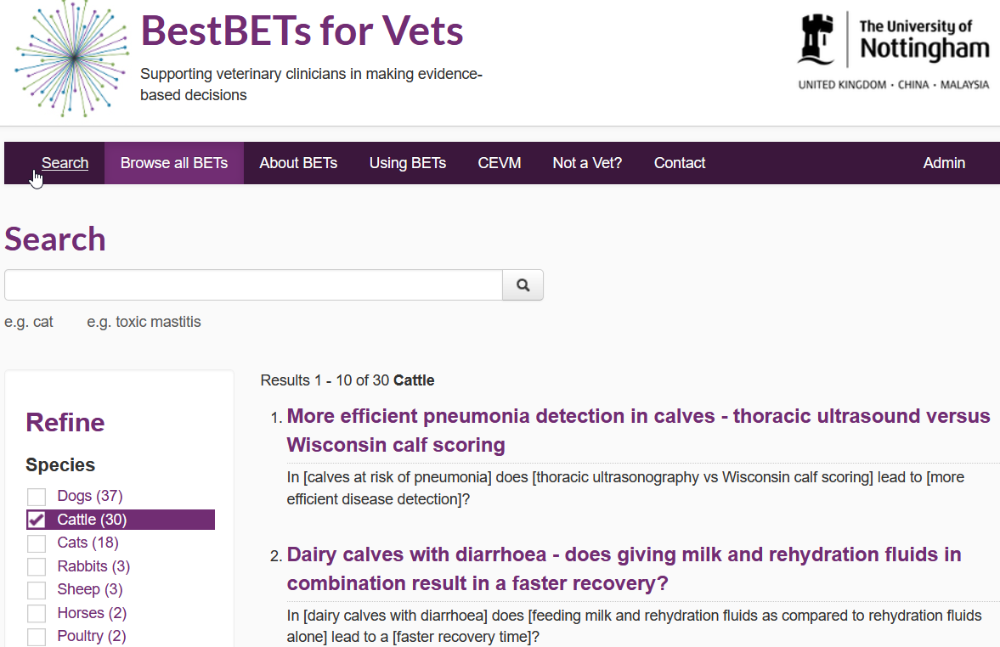
A vous de jouer !
- Construisez une question PICO à partir d’une situation rencontrée en stage ou en clinique.
Trouver les informations
Bases de données
- Recherche de documents dans des bases de données scientifiques
- Bases de données : agrègent des documents (articles, rapports, autres) publiés par diverses sources (journaux, universités, organisations officielles)
- Sources indexées différentes selon la base de données
- Accès parfois payant
PubMed
- https://pubmed.ncbi.nlm.nih.gov/
- Articles et ouvrages en sciences de la vie et médecine
- Interrogation gratuite
- Possibilité de construire des requêtes structurées
- Voir https://pico.vet/ pour la traduction de PICO en requête PubMed
Google Scholar
- https://scholar.google.com/
- Vaste répertoire de sources référencées
- Interrogation gratuite
- Possibilité limitée de construire des requêtes structurées
- Résultats fournis variables selon localisation, historique de recherche…
Autres bases de données
- Web of Science : l’une des bases de données les plus complètes. Appartient à Clarivate.
- Science Direct : base de données et accès aux ressources de l’éditeur Elsevier.
- Scopus : base de données de l’éditeur Elsevier. Inclut plus de ressources que Science Direct, notamment des documents non édités par Elsevier.
- CAB abstracts : très complète en ce qui concerne les sciences vétérinaires. Accès payant.
Note
Profitez de votre statut d’étudiant à Oniris pour explorer les différentes bases de données disponibles et consulter les ressources auxquelles l’école est abonnée.
https://www.oniris-nantes.fr/accueil/centre-de-documentation/ressources-documentaires/
Trouver des informations avec PubMed
- Saisir une requête avec les mots-clés souhaités dans la barre de recherche puis cliquer sur Search
Trouver des informations avec PubMed
- La requête retourne un certain nombre d’articles sous la forme suivante :
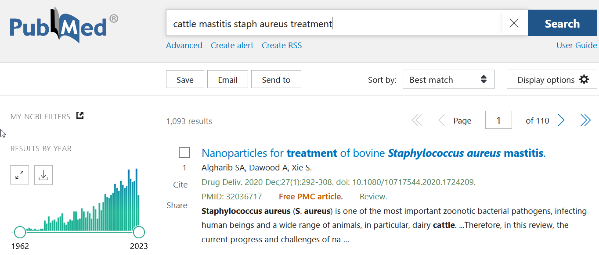
- En cliquant sur advanced, il est possible de voir comment PubMed a interprété la requête.
Trouver des informations avec PubMed
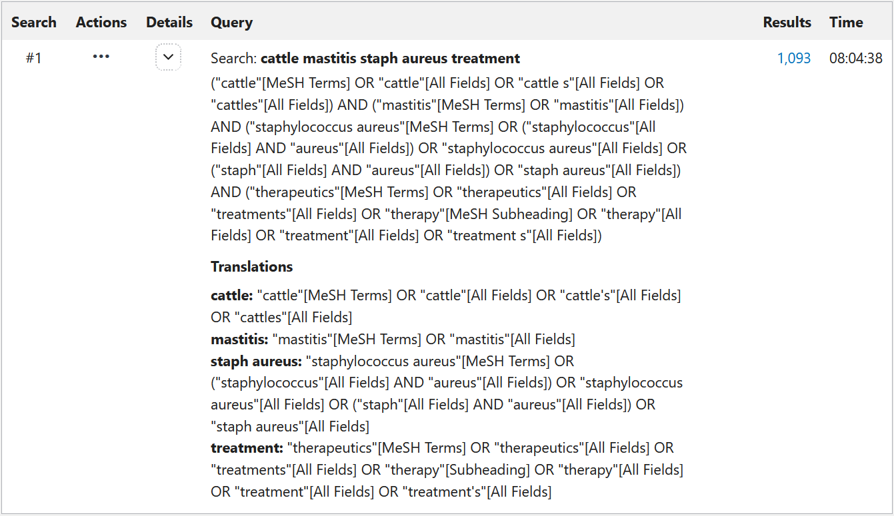
- Cette requête peut être utilisée comme base pour affiner votre recherche.
A vous de jouer !
Dans la barre de recherche simple, effectuez une recherche PubMed à partir de la question PICO construite plus haut
Dans la fenêtre de résultats, cliquez sur Advanced
Regardez comment PubMed combine différents mots-clés
- A quoi servent les booléens AND, OR et NOT ?
- Comment sont placées les parenthèses ?
Exporter les résultats de recherche PubMed
- Il est possible d’exporter les résultats retournés par PubMed pour une utilisation ultérieure.
- Cliquer sur Send to puis, dans la liste déroulante, sur Citation manager.
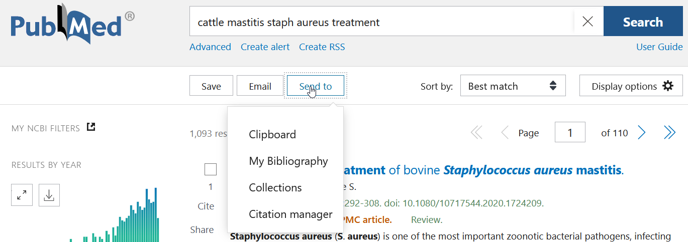
A vous de jouer !
Exportez la liste des références que vous avez trouvées.
Vérifiez qu’à l’issue de cette opération, un fichier texte contenant vos références a été téléchargé sur votre ordinateur.
Evaluer les informations
Un exemple
- Considérez l’article suivant par Swinkels et al. (2016)
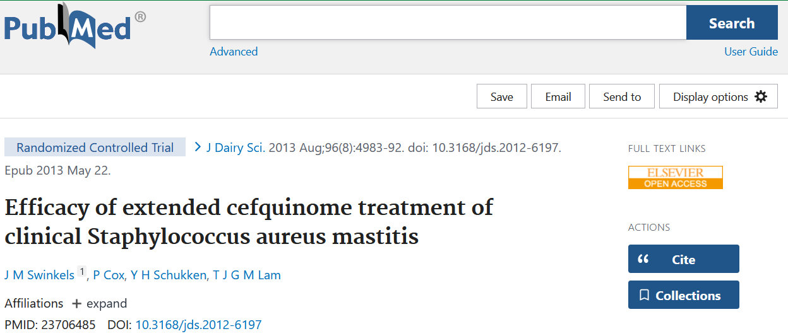
A vous de jouer !
Dans quel journal cet article a-t-il été publié ?
Connaissez-vous le processus ayant abouti à la publication ?
Qu’est-ce que le peer-review ?
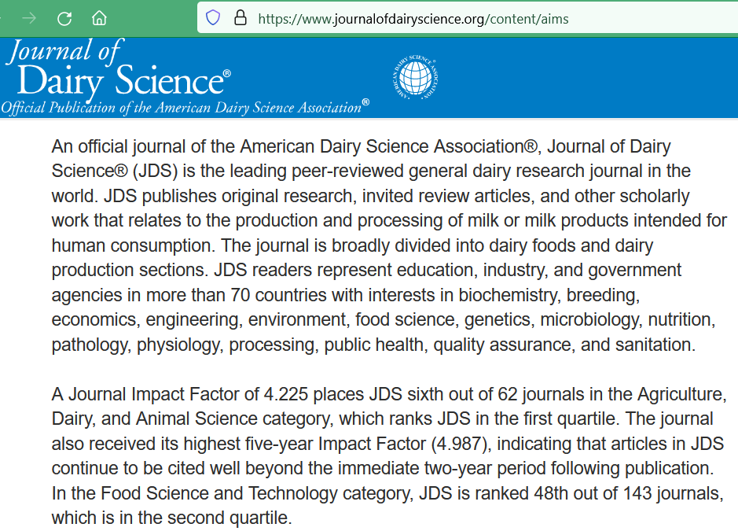Qu’est-ce que le peer-review ?
- peer-review = évaluation par les pairs1
- Évaluation des manuscrits par des experts anonymes sélectionnés par un des éditeurs du journal
- Habituellement 2-3 experts par manuscrit
- Rédaction d’un rapport
- Synthèse des rapports et décision par l’éditeur : rejet / révision mineure / révision majeure / acceptation
- Habituellement plusieurs allers-retours entre auteurs et relecteurs jusqu’à acceptation ou rejet
Evaluation du journal
A vous de jouer !
Le Journal of Dairy Science est-il un bon journal ?
Comment savoir ?
Evaluations bibliométriques
- Évaluation des journaux, auteurs et articles basée principalement sur le nombre de citations engrangées par les articles.
- Le nombre de citations dépend notamment de quelles sources (liste de journaux, autre) sont comptabilisées, et donc du producteur de l’évaluation
- Indicatif, à prendre avec précaution
Impact factor
- Facteur d’impact (impact factor en anglais) = mesure la plus utilisée de la qualité des journaux
\[ IF_a = \frac{Citations_a}{Publications_{a-2} + Publications_{a-1}} \]
- Où \(IF_a\) est le facteur d’impact pour l’année \(a\), \(Citations\) est le nombre de citations dans les journaux pris en compte pour l’évaluation pour l’année \(a\) et \(Publications\) est le nombre d’articles publiés dans la revue évaluée pour les années \(a-1\) et \(a-2\).
Facteurs d’impact calculés par Clarivate
Parfois critiqué : ne dépend pas uniquement de la qualité des publications, compétition des journaux pour l’impact factor…
Ne doit pas être l’unique facteur pris en compte lorsqu’on évalue un article
Nombre de citations d’un article
- Pour un article, on peut regarder le nombre de citations
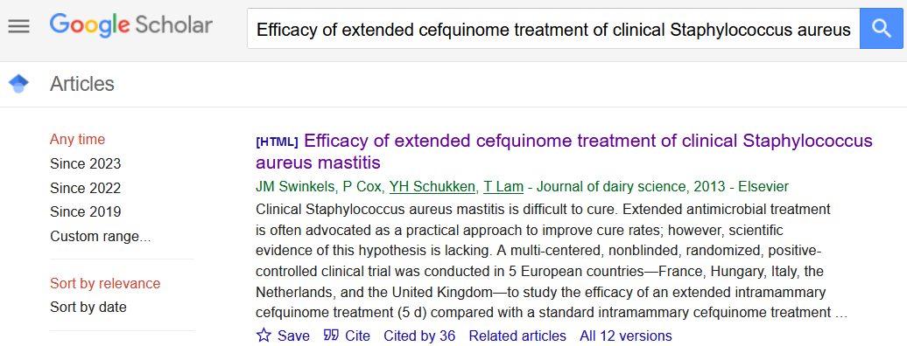
- Attention au nombre d’années depuis la publication !
- Dépend des sources de citations prises en compte, de la thématique
h-index
- Pour un auteur, on peut regarder le h-index
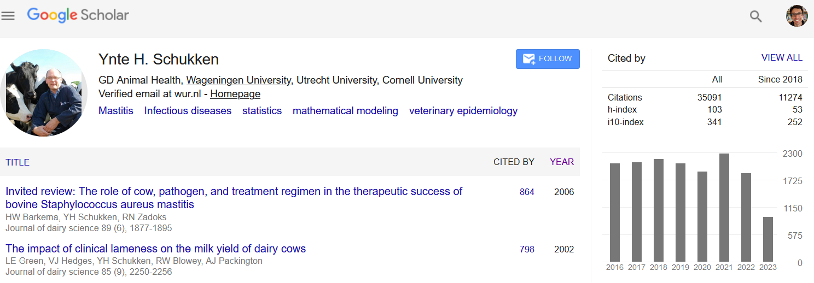
- Cet auteur a un h-index de 103 (extrêmement élevé)
- Lorsqu’on range les articles qu’il a publiés par ordre décroissant du nombre de citations, le 103\(^{ème}\) article est cité au moins 103 fois
Types d’étude
- Prouver qu’un traitement a un effet préventif ou curatif sur une maladie requiert la mise en évidence d’un lien de causalité entre traitement et évolution de la maladie
- Les méthodes statistiques quantifient des forces d’association, sans garantie que ces associations soient causales
- Certaines types d’études sont plus favorables à l’identification de relations causales que d’autres
A vous de jouer !
Quels type d’études connaissez-vous ?
Quels sont les facteurs favorables à l’identification de relations causales ?
Types d’étude
- Classification des types d’études proposé par Dohoo, Martin et Stryhn1 :
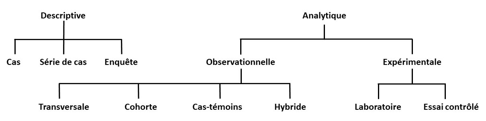
- Facteurs favorables à l’identification de relations causales :
- Etudes expérimentales/d’intervention > études observationnelles
- Comparabilité des groupes traités et témoins \(\rightarrow\) randomisation
Statistiques
- Exemple de résultats d’une étude d’évaluation d’un traitement chez des animaux initialement malades
| Guéris | Non-guéris | |
|---|---|---|
| Traitement A | 42 | 18 |
| Traitement B | 20 | 20 |
A vous de jouer !
- Existe-t-il une association statistique entre le traitement reçu et la guérison ?
- Quel test statistique ?
- Quelle hypothèse ?
- Comment faire ?
Statistiques
- Principe des tests d’hypothèse :
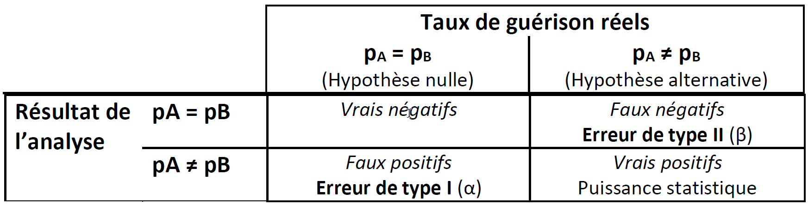
- p-value : probabilité d’observer les données si l’hypothèse nulle était vraie
- Avec un \(\alpha\) de 5% : en l’absence d’association (si l’hypothèse nulle est vraie), on conclut à l’existence d’une association (faux positif) dans 5 cas sur 100
- puissance : capacité à détecter les associations quand elles existent
- Dépend de l’importance de l’effet et de la taille d’échantillon
Gestion des références bibliographiques
Logiciels de gestion bibliographique
- Fonctions :
- Stockage et consultation de références bibliographiques.
- Citation dans un logiciel de traitement de texte (MS Word, LibreOffice, Google Docs).
- Génération de listes des références citées dans un texte.
- Nombreux logiciels disponibles (voir liste sur Wikipédia)
Zotero
- Logiciel gratuit et largement utilisé
- Téléchargement : https://www.zotero.org/download/
- Interface graphique :
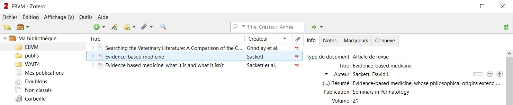
- En haut : barre de menus qui permet d’accéder à différentes commandes
- Panneau de gauche : panneau de navigation dans la bibliothèque
- Panneau du milieu : liste de références
- Panneau de droite : détail de la référence sélectionnée
Installation du connecteur Zotero
- Permet d’importer des références depuis le navigateur internet (par exemple lorsqu’on est sur la page d’un article de journal scientifique)
- Aller dans Outils / Installer le Connecteur Zotero
- Une page semblable à la page ci-dessous s’ouvre :
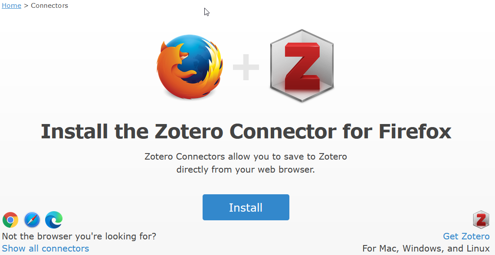
- Cliquez sur Install.
Installation du connecteur Zotero
- Le connecteur doit maintenant apparaître dans votre navigateur.
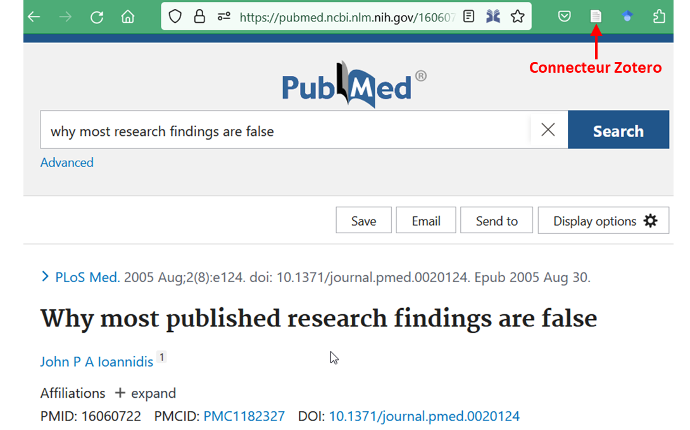
Utilisation du connecteur Zotero
- Lorsque vous cliquez sur le bouton du connecteur, le cadre ci-dessous apparaît:
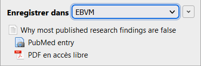
- Vous pouvez vérifier dans Zotero que la référence a bien été importée :
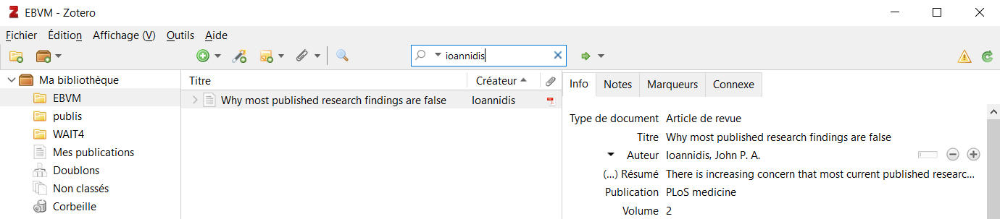
Saisie manuelle de références dans Zotero
- Cliquer sur le + vert au-dessous de la barre de menu
- Sélectionner le type de référence
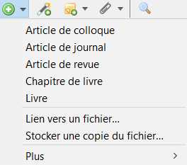
- Renseigner les différents champs
Import d’une liste de références existante dans Zotero
- Utiliser le fichier exporté plus tôt depuis PubMed
- Cliquer sur Fichier / Importer
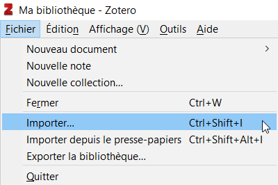
Import d’une liste de références existante dans Zotero
- Sélectionner la première modalité d’import.
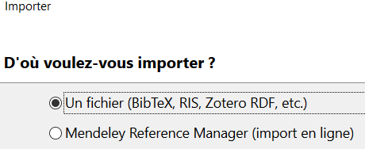
- Sélectionner votre fichier
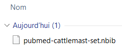
Import d’une liste de références existante dans Zotero
- Sélectionner la première possibilité
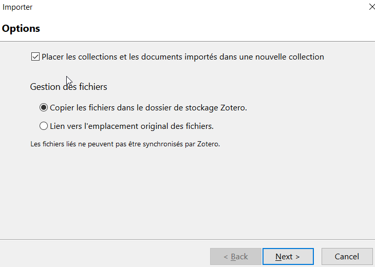
Import d’une liste de références existante dans Zotero
- Vérifier que les références ont bien été importées dans Zotero
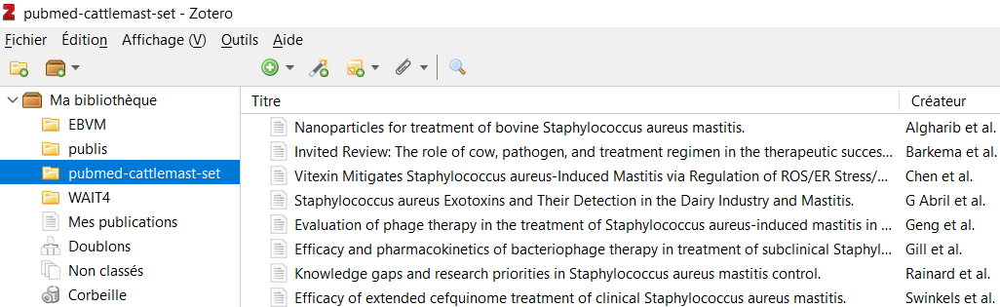
Citer des documents dans MS Word avec Zotero
- L’installation de Zotero s’accompagne de l’ajout d’un onglet Zotero dans MS Word
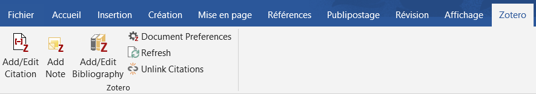
Citer des documents dans MS Word avec Zotero
- Placer le curseur à l’endroit du texte où on veut insérer la citation
- Cliquer sur Add/Edit Citation dans l’onglet Zotero de MS Word
- Choisir un style bibliographique
- Entrer des mots-clés en lien avec la référence souhaitée
- Sélectionner la référence souhaitée
- La citation doit maintenant apparaître dans le texte
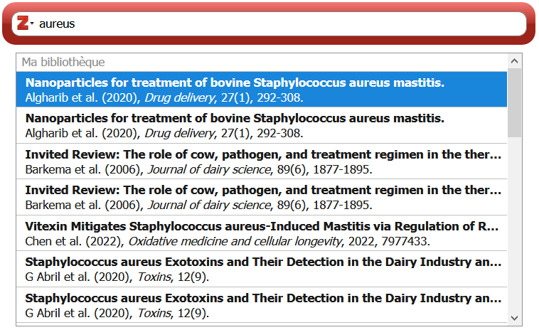
Générer une liste des références citées dans MS Word avec Zotero
Dans l’onglet Zotero de MS Word, cliquer sur Add/Edit Bibliography
Il est possible de changer le style de citation/liste, en cliquant sur Document Preferences
Utilisation de Zotero dans des logiciels autres que MS Word
- Zotero fonctionne selon les mêmes principes dans d’autres logiciels :
- Il est possible d’avoir des librairies Zotero de groupe
- Permet de partager des références lors de travaux de groupes
- Facilite la rédaction de Google Docs à plusieurs
- Voir la documentation : https://www.zotero.org/support/groups
Merci pour votre attention !
Pour aller plus loin
- Document en ligne Introduction à la médecine factuelle: https://aurmad.github.io/medecine_factuelle/etude_types.html
- Ressources sur l’EBVM du Royal College of Veterinary Surgeons (GB) : https://knowledge.rcvs.org.uk/evidence-based-veterinary-medicine/ebvm-learning-and-resources/